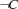
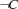
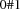
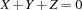
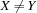
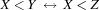
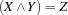
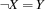
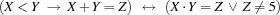

8.1 Getting Started
reification of a constraint
The reification of a constraint  with respect to a variable
with respect to a variable  is the constraint
is the constraint
where it is assumed that does not occur free in .
The operational semantics of a propagator for the reification of a constraint with respect to is given by the following rules:
If the constraint store entails
 , the propagator for the reification reduces to a propagator for .
, the propagator for the reification reduces to a propagator for .If the constraint store entails
 , the propagator for the reification reduces to a propagator for }.
, the propagator for the reification reduces to a propagator for }.If a propagator for
would realize that the constraint store entails , the propagator for the reification tells and ceases to exist.If a propagator for
would realize that the constraint store is inconsistent with , the propagator for the reification tells and ceases to exist.
To understand these rules, you need to be familiar with the definitions in Section 2.2.
0/1-variables
A 0/1-variable is a variable that is constrained to the finite domain . The control variables of reified constraints are 0/1-variables.
posting refied constraints
Here are examples for statements creating propagators for reified constraints:
(X<:Y)=Bcreates a propagator for the reification of with respect to
with respect to  .
.(X+Y+Z=:0)=Bcreates a propagator for the reification of  with respect to.(X\=:Y)=Bcreates a propagator for the reification of  with respect to.(X::0#10)=Bcreates a propagator for the reification of with respect to .
with respect to .{FD.reified.distance X Y '=:' Z B}creates a propagator for the reification of with respect to .
with respect to .
expressing equivalences
With reified constraints it is straightforward to express equivalences of constraints. For instance, the equivalence

can be posted with the statement
X<:Y = X<:ZThis statement is a notational convenience for
local B in
X<:Y=B X<:Z=B
endand creates 2 propagators for reified constraints.
Boolean connectives
We can define the Boolean connectives (e.g., conjunction or negation) by associating 0 with false and 1 with true. The respective Boolean constraints can be posted by means of the following procedures:
{FD.conj X Y Z}posts the constraint .{FD.disj X Y Z}posts the constraint .
.{FD.impl X Y Z}posts the constraint .
.{FD.equi X Y Z}posts the constraint .
.{FD.nega X Y}posts the constraint .
Exercises
Exercise 8.1 (See solution)
Write a statement that posts the constraint

Exercise 8.2 (See solution)
Write a procedure
{Conj X Y Z}that posts the constraints
The procedure should post the conjunction . by means of the reified form of the infix operator
=:.Write analogous procedures
EquiandNegaposting equivalences and negations.Write an analogous procedure
Disposting a disjunction<:to post the disjunction.How would you write a procedure posting an implication